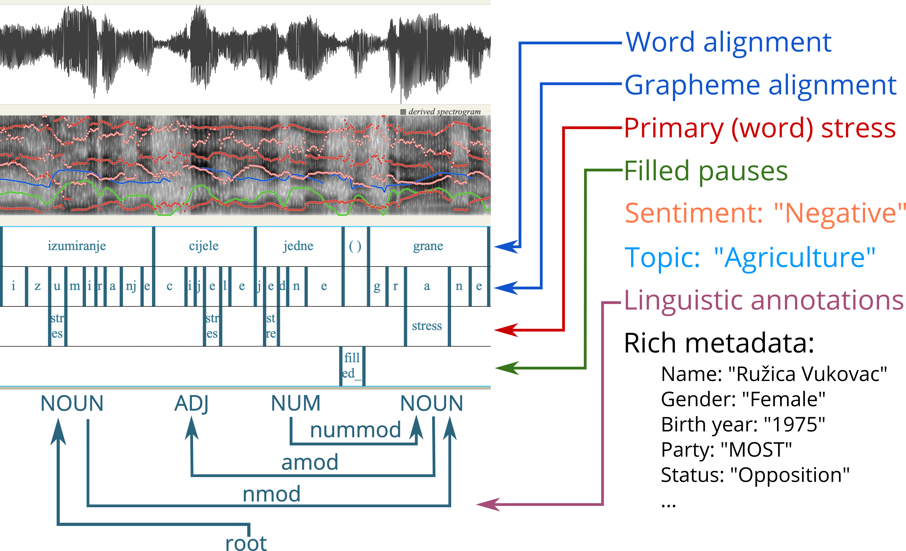
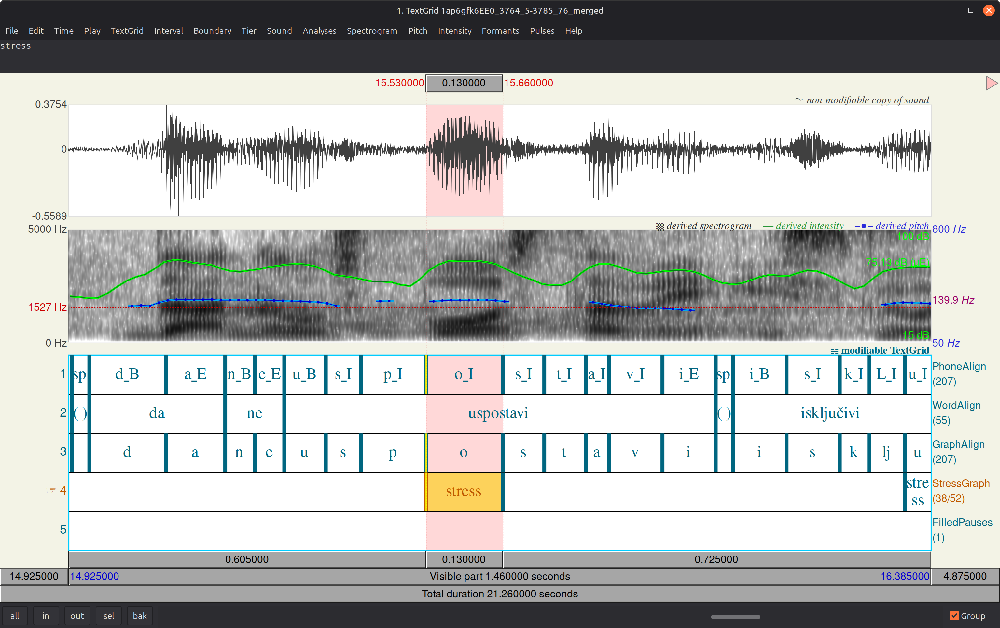
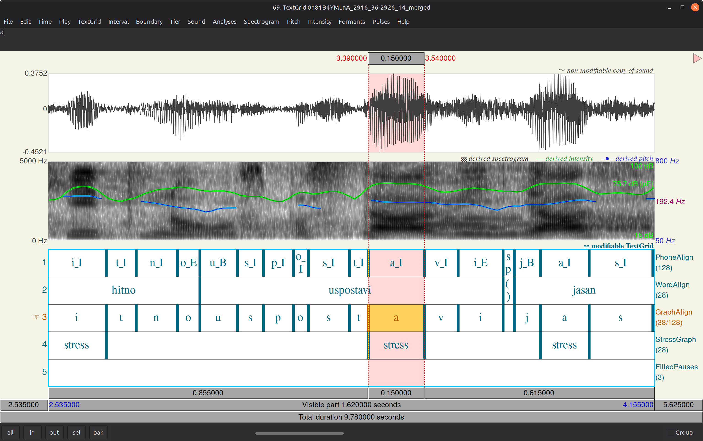
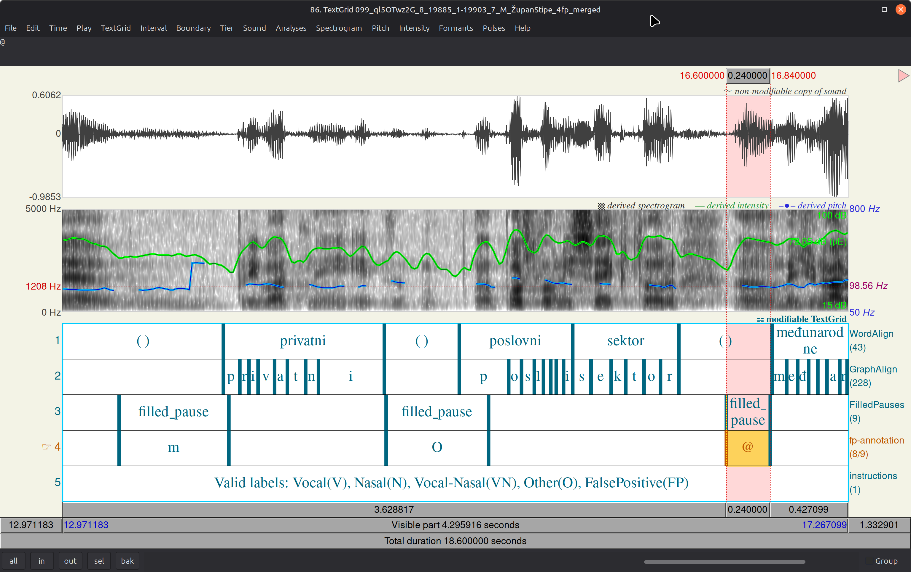
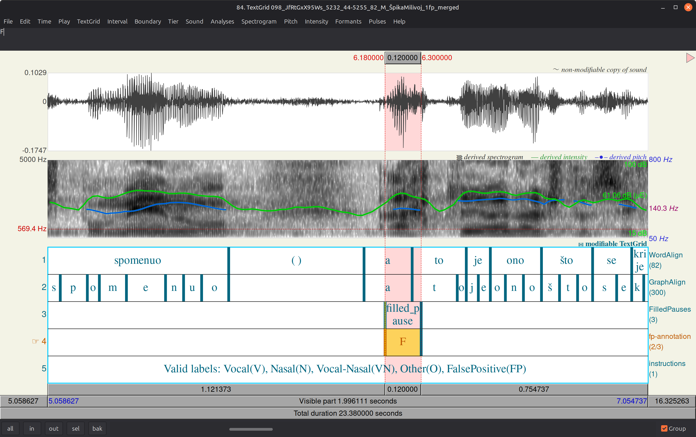

Alongside the computational (JSONL) and corpus-linguistic
(NoSketch Engine concordancer)
formats, ParlaSpeech v3 is distributed as separate Praat TextGrid files.
TextGrids let you see and hear the annotation layers
directly on the waveform, spectrogram, pitch and intensity tracks — ideal for
phonetic inspection, teaching, and error-checking.
This guide walks through opening four TextGrids examples, reading their tiers,
and looking at acoustical features. All examples are from the Croatian ParlaSpeech v3.

Example ParlaSpeech TextGrid opened in Praat, showing the alignment, stress and filled-pause tiers.
Layer availability: the word- and character-level alignment
(WordAlign, GraphAlign, PhoneAlign) and the
primary-stress tier (StressGraph) are currently available for
Croatian and Serbian only. The filled-pause tier
(FilledPauses) is available for all four languages
(Croatian, Serbian, Czech, Polish).
Praat is a free, open-source software package widely used for speech analysis in phonetics and other fields of linguistics. It displays the audio as a waveform and spectrogram, with optional pitch (blue), intensity (green) and formants (red) envelopes overlaid, and aligns a TextGrid of labelled tiers beneath them.
Download Praat from praat.org.
To open a ParlaSpeech example: start Praat, then Open → Read from file…
and select both the audio (.wav) and the matching
.TextGrid (same filename stem). Select both objects in the list and click
View & Edit to see them together.
ParlaSpeech distributes three separate TextGrids per audio file, one per annotation
layer: align (word/grapheme/phone alignment), stress
(primary stress) and pause (filled pauses). The examples bundled with
this guide are pre-merged into a single TextGrid for convenience, so all tiers
display together in Praat. A fully-enriched Croatian/Serbian TextGrid contains the
following tiers, top to bottom:
| Tier | Type | Source TextGrid | Contents |
|---|---|---|---|
| PhoneAlign | Interval | align |
Phone-level segmentation (Kaldi MFA), with boundary tags (e.g. _B, _I, _E). |
| WordAlign | Interval | align |
Word-level alignment (finer Kaldi MFA alignment, i.e. words_align). |
| GraphAlign | Interval | align |
Grapheme (character)-level alignment. |
| StressGraph | Interval | stress |
Primary-stress marker (stress) placed on the stressed syllable's nucleus. |
| FilledPauses | Interval | pause |
Model-detected filled pauses (filled_pause), e.g. "eee", "umm". |
Can we visually see the difference between stressed syllables? The Croatian verb uspostavi ("establishes") is a primary-stress doublet: it is realised with stress on either the 2nd or the 3rd syllable. Because stress in Croatian raises pitch, intensity and often duration on the stressed syllable, the two variants look and sound distinct in Praat.
Open the two examples below and compare the StressGraph tier against the
pitch (blue) and intensity (green) tracks. In each, the stress marker sits
on the syllable whose nucleus carries the local pitch/intensity peak.

Praat: uspostavi with primary stress on the 2nd syllable.
To follow along, open
examples/1_1ap6gfk6EE0_3764.5-3785.76.wav and its matching
examples/1_1ap6gfk6EE0_3764.5-3785.76.merged.TextGrid in Praat.

Praat: uspostavi with primary stress on the 3rd syllable.
To follow along, open
examples/2_0h81B4YMLnA_2916.36-2926.14.wav and its matching
examples/2_0h81B4YMLnA_2916.36-2926.14.merged.TextGrid in Praat.
Can you find your own doublet examples?
Umm… what now? Filled pauses — hesitation sounds such as
"eee" or "mmm" — are marked on the FilledPauses tier.
On the spectrogram a filled pause typically shows as a steady, sustained formant
structure with little change over its duration, unlike the rapidly-changing formants of
ordinary speech.

Praat: filled_pause intervals, aligned to sustained
hesitation sounds in the waveform and spectrogram.
To follow along, open
examples/3_099_ql5OTwz2G_8_19885.1-19903.7_M_ŽupanStipe_4fp.wav and its
matching examples/3_099_ql5OTwz2G_8_19885_1-19903_7_M_ŽupanStipe_4fp_merged.TextGrid
in Praat — this segment contains four detected filled pauses.
This layer supports research on speech disfluencies, planning phenomena, and the prosody–syntax interface.
The filled-pause detector is not infallible. Sometimes the model flags
a filled_pause where there is none — typically on a stretch of
ordinary speech, a breath, or background noise. Because the detections sit directly on
the FilledPauses tier alongside genuine hesitations, spotting the wrong
ones is a matter of listening and cross-checking the spectrogram: a real filled pause
shows steady, flat formants over its duration, while a false positive typically does
not.

Praat: a model-flagged filled_pause that is in fact a
false positive — the formant structure and audio do not match a true hesitation.
To follow along, open
examples/4_098_JfRtGxX95Ws_5232.44-5255.82_M_ŠpikaMilivoj_1fp.wav and its
matching examples/4_098_JfRtGxX95Ws_5232_44-5255_82_M_ŠpikaMilivoj_1fp_merged.TextGrid
in Praat.
We include this example deliberately: automatic annotations are a strong starting point, but for careful phonetic work it is worth listening and verifying rather than trusting every marker. The overwhelming majority of detections are correct, but recording issues, alignment errors, or genuine misclassifications do occur.
Across the three examples above, we have shown how ParlaSpeech's TextGrid annotations
surface visibly and audibly in Praat: an uspostavi stress doublet split neatly
across the StressGraph tier, with the pitch and intensity peaks lining up
on the marked syllable; several genuine filled pauses on the FilledPauses
tier, showing the characteristic flat, sustained formant structure of a hesitation;
and one detector error — a false positive that the same spectrogram cues expose
on inspection. Together they demonstrate that the alignment, stress and filled-pause
layers are directly usable for phonetic inspection and error-checking, and that
— for careful work — the corpus rewards listening and verifying
alongside trusting the automatic annotations.